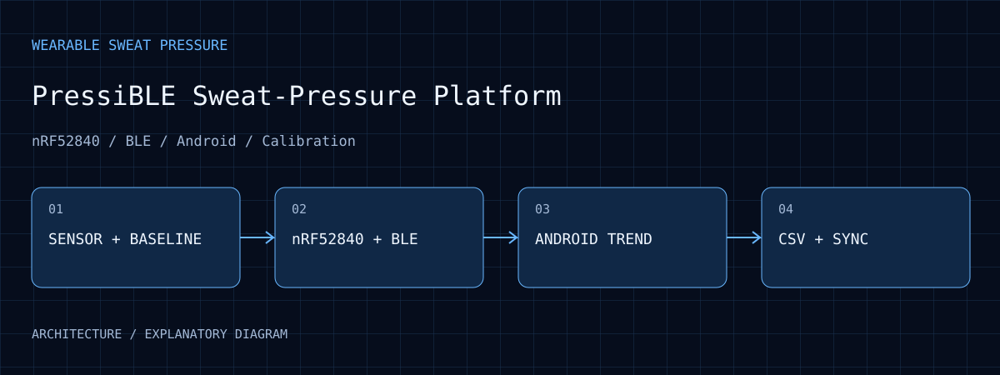
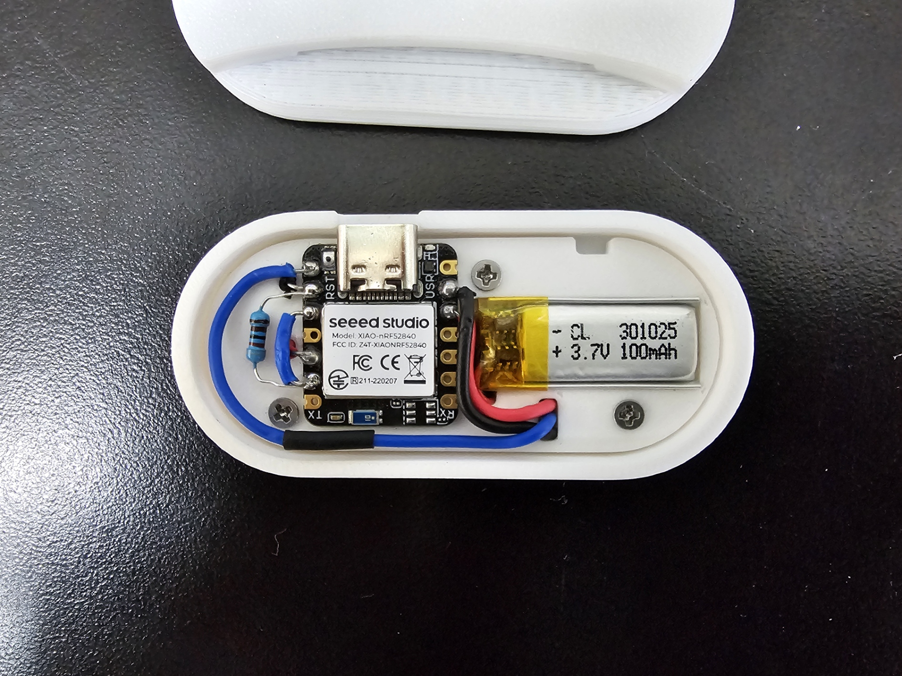
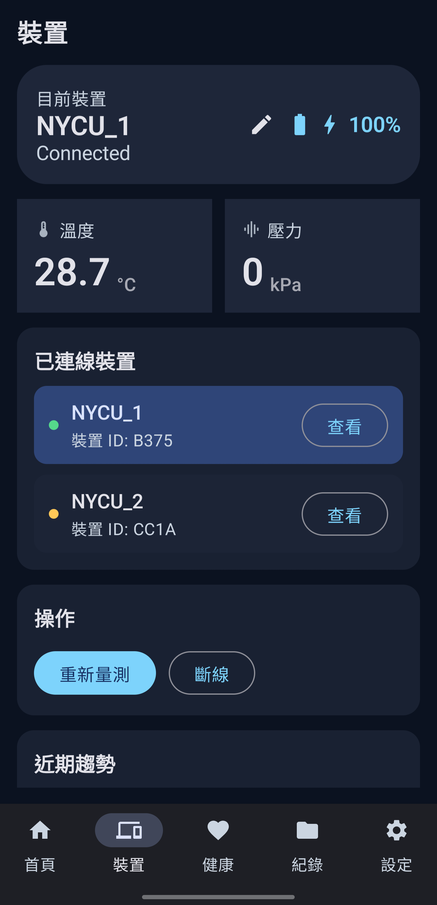

Integration scope
Work covers sensing firmware, BLE payloads, baseline normalization, phone trends and export.
PressiBLE Sweat-Pressure Platform
An nRF52840, BLE, and Android workflow connecting sweat-pressure-related signals, temperature, live trends, and CSV records for wearable sensing research.

01 / PURPOSE
Connect sweat-pressure-related measurements to an observable, exportable phone data workflow.
02 / ARCHITECTURE
Firmware schedules sweat-pressure-related electrical signals and temperature, retaining valid values and baseline context.
nRF52840 BLE exchanges control and data while associating records with the correct device.
Android presents trends and measurement operations, with a separate firmware-maintenance workflow.
CSV and Firebase support later analysis. Nordic DFU and optional Health Connect are distinct paths.
03 / WORKFLOW
Check device state and retain the baseline and run conditions.
Sample according to firmware timing and transfer data over BLE.
Read values, timestamps and device state together.
Export or synchronize data for analysis under the appropriate calibration.
04 / EVIDENCE
Work covers sensing firmware, BLE payloads, baseline normalization, phone trends and export.
The page includes an archived open-enclosure photograph and a manual-embedded app screenshot, explaining electronics integration and device/readout operations separately. They are not treated as one tested revision.
The relationship between electrical signals and pressure categories depends on patch, sweat and experimental calibration.

The open-enclosure photograph on slide 6 of the original sweat-pressure presentation shows the XIAO nRF52840, battery, wiring and mounting arrangement. It makes the sensing, wireless and power integration tangible. This archived prototype is not treated as the same tested revision as the newer app view shown here; the photograph does not establish pressure calibration, battery life or wear safety.
Open full size ↗
An original app screenshot embedded in the PressiBLE ver2 user manual shows device selection, connection states, battery/charging information, temperature, pressure categories and a remeasure action. The displayed 28.7 °C, 0 kPa and 100% are snapshot values, not calibration results, clinical conclusions or a battery-life test.
Open full size ↗05 / ANALYSIS
Patch and initial-state differences can shift the baseline. Retaining raw and baseline values helps explain normalized results.
A trend needs a traceable device and measurement time. Connection state and missing data also affect exported records.
Reliable packets establish the data path; pressure discrimination depends on independent calibration and sensing experiments.
06 / REPRODUCE
07 / LIMITS
Code is private. Pressure categories require calibration for the patch, sweat, and test conditions; working communication does not establish sensing performance.
08 / SOURCES
Selected images retain their visual content. Captions distinguish prototype photographs, application interfaces, archived records, analysis and simulations.